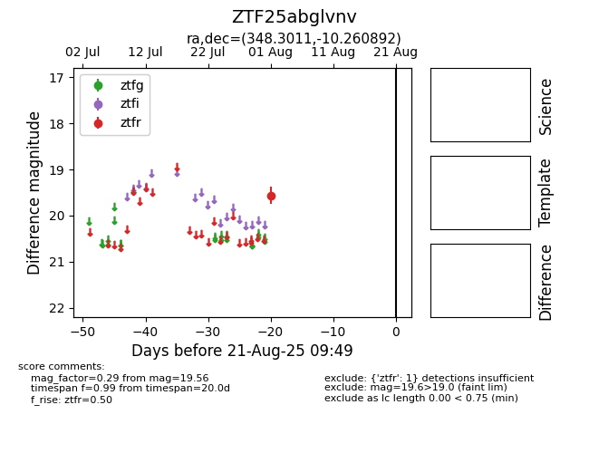

Target ZTF25abglvnv at 2025-08-21 09:49, see:
FINK: fink-portal.org/ZTF25abglvnv
Lasair: lasair-ztf.lsst.ac.uk/objects/ZTF25abglvnv
ALeRCE: alerce.online/object/ZTF25abglvnv
alt names
ZTF25abglvnv (ztf,alerce)
coordinates:
equatorial (ra, dec) = (348.3011,-10.26089)
galactic (l, b) = (64.3248,-61.37297)
photometry
last ztfr=19.56
1 ztfr detections
